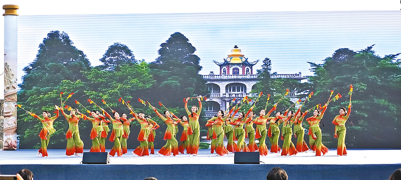

平舆非遗文化 - 薪火相传的民俗瑰宝
千年传承的本土文化，是平舆人民智慧的结晶，更是家乡珍贵的文化财富

驻马店市级非物质文化遗产
平舆太任文化
平舆是上古时期挚国的都城，是周室三母之首太任的故里，太任文化也成为平舆本土最具代表性的非遗文化之一。太任是周文王姬昌的母亲，她品行端方、贤良淑德、教子有方，其胎教育人的典故流传千古，被尊为中华贤母的典范。平舆境内的太任公园正是为纪念这位贤母所建，太任文化的核心是贤德、孝善、礼义与家教，历经数千年传承，早已融入平舆人的血脉之中，成为家乡精神文明的重要根基，更是中华优秀传统文化的重要组成部分。

驻马店市级非物质文化遗产
杨埠打花棍
杨埠打花棍是平舆县杨埠镇独有的传统民间舞蹈，距今已有三百余年的历史，是豫南地区极具特色的民俗表演形式。花棍以竹棍、木棍为主体，棍身嵌装铜钱、彩绸、铃铛，表演时表演者手持花棍，以手、肩、背、腰、腿、脚等身体部位，配合步伐的腾挪跳跃，对花棍进行击打、旋转、抛接，击打时铜钱叮当作响、彩绸迎风飞舞，动作刚柔并济、节奏感强。打花棍多在春节、元宵等传统佳节表演，既可单人独舞，也可多人组队表演，是当地群众祈福纳祥、欢度佳节的重要形式，兼具观赏性与娱乐性，更是平舆民间艺术中熠熠生辉的文化瑰宝。